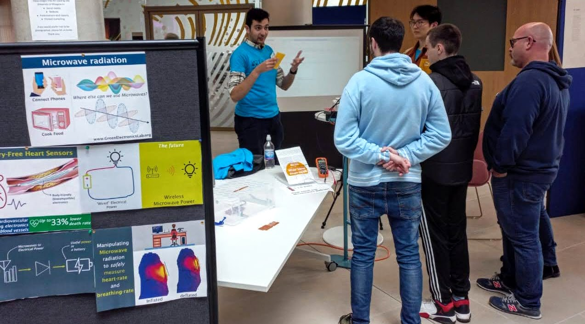

Public Engagement and Outreach
Effective research communication to non-specialist audiences from different backgrounds is corner-stone to REST research.
From presentations at schools to fairs and exhibitions, we are always after opportunuties to communicate exciting and impactful research to the public!

Our RF GREEN electronics research is highly experimental and often have immediate links with real-world applications.
We have demos that showcase in our technology in different use-cases. Get in touch if you would like to see a display our work in action!

Our GREEN electronics stall at the Glasgow Doors Open/ARCadia Weekend at UofGlasgow's Advanced Research Centre welcomed over a hundred visitors from various backgrounds. Our visitors experienced first-hand how microwaves can deliver clean power, and how sensors can be directly printed on clothing.
The cross-group stand showcased research from various teams across different research divisions, showing how microwave technologies can co-exist.
Dr. Mahmoud Wagih regularly takes part in invited workshop appearances and panels related to effective research communication, working closely with Professor John Bandler OC FRSC of McMaster University.
Wagih's award-winning "Collecting Radio Rain" presentation, featured in the IEEE Microwave Magazine, is regularly featured in IEEE Microwave Theory & Technology Society webinars on engaging technical communcations.